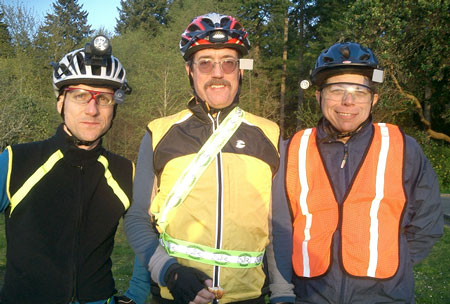

Volume 10 Issue 2 - May 2005
Ride Summary: 300km
Ride Preview: SIR Spring 400km
The Art of the Pre-Ride
Long-Ride Logistics
Ride Report: SIR's First Grupetto
NOTE: Please send any content for the newsletter to Patrick Gray
- SIR's 400km is May 7-8 starting in Ellensburg.
- SIR's 600km is June 4-5 starting in downtown Seattle.
- If you're interested in joining the Grupetto for the 400km, contact Bill Dussler.
- Volunteers are still needed for the Cascade 1200. Click here for more information.
Jan Heine
The 300 km brevet on April 9th was another good one for most riders (see statistics below). On one of the rare rainless days lately, 63 riders set out on a new course. Navigation in the suburbs was not always easy, but most people appear to have made it out of Tacoma fine. One group found themselves back on course at km 9 after having ridden close to 30 km!After some scenic back roads, including a lovely descent into the Nisqually Valley, a bicycle trail with numerous gates, posts and other obstructions provided quiet, but challenging riding. Two riders were felled by a strategically placed, unexpected post far from the next intersection, but fortunately, there appear to have been no serious injuries. At least one of the bikes did not fare as well.
After many hours of battling winds howling across the relatively flat terrain some saw the last, hilly stretch as a relief, while others probably were too exhausted to appreciate it. The piece de resistance of riding across the Tacoma Narrows Bridge was easy by comparison, especially because the organizers had swept the sidewalks.
In summary, it was a challenging ride that demanded every aspect of the "complete randonneur," whether navigation, stamina, bike handling skills, power to ride into the wind or climbing.
Statistics
Number of starters: 63 Number of finishers: 58 Number of DNF: 5 (including 2 due to accidents) No penalties, disqualifications, etc.
David Huelsbeck
The ride seems to include more climbing than the stats indicate. It differs from Westside riding in that there are very few rollers. There are long stretches of flat broken up by relatively long, mostly highway-grade climbing. I don't remember anything steeper than 5-6%.
During the grupetto discussions Bill Dussler guessed at a difficulty rating of 6 on a scale of 1 to 10. I think I would assign a range from 5 to 8. The range is needed to account for the wind. We had mostly mild breeze out of the south and east that worked against us for most of the ride. I'd give our ride a 7. With winds mostly from the N-NW, this would be a much easier ride. Strong wind, regardless of direction would push the difficulty up.
The other significant factor is the huge temperature swing. On the lower south slopes of Blewett we experienced temps as low as 34 degrees. Afternoon temps on the higher ground between Mattawa and Sunnyside were just touching 80 degrees. At Cashmere our feet were still cold from Blewett and the descent. By East Wenatchee we were stripping most of our warmers and caps off.
Stats per two separate cyclometers:
252 miles plus the "neutral roll-out", between 10,500 and 11,000 feet of gross elevation gain. 33% climbing, 28% flat, 39% descending: It seems we picked the steeper sides.Leg, Distance, Climbing
Ellensburg to Start Line 8.4 233’
Start Line to Blewett Summit 25.6 2949’
Summit to Cashmere 27.3 92’
Cashmere to Quincy 45.4 2100’
Quincy to Mattawa 40.5 1076’
Mattawa to Sunnyside 46.0 2369’
Sunnyside to Yakima 31.5 768’
Yakima to Ellensburg 35.8 1243’
Totals 252.1 miles, 10597’
Ken Carter
Although there is no strict requirement that brevet organizers conduct a pre-ride, there's no better way to ensure that a planned course matches the cue sheet on the day of the ride. The purpose of a pre-ride is to validate the route sheet for mileage, check the road signs with the names taken from a map and confirm that roads are actually open. This usually requires the brevet organizer to stop multiple times to write down notes and possibly take a different road due to detours or bad road conditions. The pre-ride also provides the opportunity to locate food stops, stores or other control locations. These locations need to be open and available for riders to get their cards stamped so choosing stores that are open 24 hours is usually best.
Each brevet organizer decides how many other riders to take on a pre-ride. In the beginning of SIR, usually one to three people would do the pre-ride, but the organizer can use their discretion on how many to include. One of the most important considerations on choosing who to include in the pre-ride is each rider's pace. The riders need to stay together at the pace set by the organizer. Also, for long brevets like the 600km or 1000km routes, expenses for lodging might be incurred. It needs to be determined whether the club can absorb the costs or if all pre-ride expenses are paid individually. In the past, all expenses were paid individually by the riders, mostly due to how small the SIR membership was and the fact that all brevet organizers are volunteering their time and effort to put on a Brevet.
Riders who complete a pre-ride can get brevet credit as long as SIR and RUSA rules have been followed. However, scheduling conflicts with SIR's official brevet dates is generally a poor reason to join a pre-ride. If pre-ride groups are too large, various problems can result, including incompatible paces and possible DNFs. All said, the pre-ride group should be small, compatible and patient so the brevet organizer can put an accurate route sheet together and enjoy the ride.
Patrick Gray
As the longer rides of the season approach this is a good time to tap into the knowledge in SIR's Regional Brevet Administrator, Mark Thomas. Mark's been riding with SIR since 1998, rode Paris-Brest-Paris in 1999 and 2003 and as the RBA is responsible, to some extent, for the success or failure of SIR's brevets. He was kind enough to field questions for this issue of the newsletter.
Q: The 400km and 600km brevets are the longest in a typical brevet schedule, is it safe to say that if you haven't struggled with a 300km, that you're pretty much ready for a 400?
A: You almost certainly have the fitness to complete a 400km brevet. You need, however, to be prepared for some additional challenges.You are likely to have significant night riding on a 400km, so you should be sure that you have appropriate lighting - not just to illuminate the road and signal your presence to drivers and other riders, but also to read your route sheet and do roadside repairs.
You may also experience greater weather extremes on the longer brevets - it's important to be prepared for cold night riding. It's one thing to start a brevet in the cold of a morning; it's quite another to ride into a chilling night after a long day of riding. Make sure that you have appropriate clothing.
Longer brevets also are more likely to bring emotional or physical lows that need to be weathered. Plan for what you will do if you start to feel really lousy. Some tips: try eating, drinking, or a nap.
Q: For rides starting far from home (like Ellensburg) is it far better to arrive the night before, rather than make an early morning trip over the mountains? What about staying over post-ride as well?
A: That's really a matter of personal preference. I will drive over to Ellensburg on Friday night, so that I can have a long night's sleep to prepare for riding into Saturday night (and possibly into Sunday morning without sleep). After the ride, safety should be your first priority. Falling asleep at the wheel on the way home is a risk. For many people, a nap at the finish and some coffee are enough to ensure a safe ride home. For others (myself included) another night in a motel is money well spent.Q: I haven't stopped for more than 5 to 10 minutes on any of the shorter brevets. Is it time to rethink that approach? Is it better to plan for at least one longer stop on the 400?
A: Again, this is a matter of personal preference. Some riders have their nutrition requirements carefully calculated and managed with powdered drinks, Ensure, or other foods. For others, however, a good lunch or dinner stop can make the difference between a successful brevet and a DNF. A power nap stop during the night has also helped many a randonneur or randonneuse complete his or her first 400k brevet.Q: In Burke and Pavelka's Complete Book of Long-Distance Cycling the authors write that after 10 or 12 hours of riding you're pretty much in equilibrium and the only thing different with longer distances is the issue of sleep, or lack thereof. So what about sleep on longer brevets? Should riders have specific sleep goals going into a ride, or just wing it?
A: Both approaches are possible. The most important thing is probably a willingness to be flexible. For me, I usually plan to ride a 400k straight through, with the backup plan of a quick nap if necessary. On a 600k, I usually seek to get some sleep, and it helps me to plan the location of that stop in advance.Q: Any other advice for riders planning to do the 400 and 600, or longer distances?
A: Be prepared before the ride - select clothing, tools, and spares carefully to enhance your ability to complete the ride.
Be flexible during the ride - adapt your ride plan to the circumstances.
Be aware of your physical requirements and take care to keep yourself properly fueled and hydrated.
Be conscious of the mental highs & lows of a ride and be prepared to deal with the lows.
Above all be safe - riding at night when tired demands even more attention to safety.More of Mark's advice regarding longer distances can be found in the June 2003 issue of SIR Rides Again.
David Huelsbeck
Towards the end of the 2004 season there were discussions within the SIR ranks about the lack of female riders in the club. Allison Bailey suggested that it might be the prospect of spending hours alone, in the middle of nowhere, late at night that might be the biggest barrier to new riders. At the 2004 annual meeting, David Huelsbeck suggested that a few veterans volunteer to ride together with those who might want a buddy. Mark Thomas, SIR's RBA suggested that the ride organizer could act as a clearing agent to match people looking for companionship or mutual support. That morphed briefly, and only theoretically, into the ‘new rider mentorship’ concept, which has been essentially abandoned.
In an e-mail discussion about the ‘mentor’ program, Paul Johnson proposed adopting a "Grupetto" structure instead, and described how the Grupetto evolved in European professional cycling: "Grupetto refers to a group that forms, usually on mountain stages, where all the riders who are ‘climbing challenged’ ride together to assure that they make the time cutoff for the stage and thus no one is eliminated. It's a collegial setting where the normal ‘I win - you die’ rules are suspended and the members of the Grupetto ride to assure a mutual benefit."
The Grupetto concept took root as it provided the notion that both rookies and veterans could benefit, there would be quasi-formal arrangements before rides begin and there would be less of a master/trainee atmosphere during the ride. Dave persevered with this idea, garnering more feedback from rookies and veterans alike. On April 9th the first SIR Grupetto took to the roads of south Puget Sound for the Spring 300. Some things turned out as planned, others did not, but a unique experience was in the making and here's Dave's report, with comments from other members of the Grupetto sprinkled throughout--
As we rolled out at 6:00 I realized that I'd made a rookie mistake by not verifying that my cyclometer was functioning before the start. I paused for a moment to get it going and was quickly off the back of the pack. Starting up the first hill I chatted with another rider, astride a Marinoni with disk brakes and a Rohloff hub, who was also hanging back and warming up sensibly. As we rolled up Center Street I inquired as to whether he'd planned to join in the grupetto. When he said "no," I figured that I'd better bid him bon route and get about catching up to the group of five or six riders up the road that I took to be the grupetto.
 SIR's First Official Grupetto
(l-r) David Huelsbeck, Bill Gobie and Michael Rasmussen
Photo: Peter BeesonThis proved to be harder than I'd expected as a few lights worked against me but I finally closed the gap around the turn onto Bridgeport Way. It was there that I hooked up with Michael Rasmussen, who I had previously known only by e-mail. We both missed the short turn light and were again chasing back on, but together now. As fate would have it, we would never make the junction.
Bill: For the benefit of the prospective grupetto members who did not know David Huelsbeck, Peter Beeson had introduced David just prior to the start. In the starting melee I lost track of David, and assuming I was too slow, pushed ahead and caught Terry's group. They told me David was behind. As no one was visible behind at that moment, I decided to carry on with this group as far as possible.With the others clearly in our sights as we rounded the first traffic circle at Cirque Drive and Grandview Drive, Michael felt his front tire begin to roll. It was a small sliver of glass and a straightforward tube replacement, but by the time it was all done we were off the back for good. So imagine our surprise when Jan Heine, Del Scharffenberg, and company passed us on the climb out of Steilacoom. Though they'd taken a 10-mile detour, they had caught back up to us and were on their way after a few words of encouragement.
Michael: This moment provided benefit and lesson #1 of the grupetto. Rounding the traffic circle at speed I felt the front tire unstable on the corner, a side rolling sensation that put my stomach on a queasy roller coaster as physical memories of my crash last year coursed through the veins. Fortunately the net effect of the turn was a dose of adrenaline to add more sparkle to the sunny morning. A call out of "I'm flatting," brought Dave back. He assisted with the change and told of the advice from another rider. "Carry a folding tire with a tube inserted. When you get that flat in the dark, during the rain on the side of a mountain road you can swap the whole works out. Then you can repair the tube and find the shard at your leisure later."This put us out of sight of Terry's group, so our catch-up pursuit ended. Dave set the pace and handled navigation. I enjoyed the morning and kept glancing down at my cycle computer. The pre-ride announcement had said the grupetto would target an average rolling pace of around 12.5 mph. Taking into account the slowdowns encountered with climbing, the pace on flat sections of the road would be higher. I wanted to know just what this higher pace might be, so I followed Dave and kept glancing down. The pace we maintained was lesson #2. The numbers seemed high to me. But I was here to learn and while the pace was faster than I normally sustain it tickled, rather than pushed, my concept of sustainable comfort. The pacing lesson was put forth as we followed the shoreline of the Sound south. This felt mostly comfortable. When we had left the site of the flat repair Dave had mentioned that it was mostly, nearly all, flat-to-downhill from where we were to the first control.
Out of Steilacoom the average pace plummeted. We were ascending one of those sloped patches of flat road. The kind that can induce "if I ride at this pace for the rest of the course I should be to the end by Tuesday" calculations.
When we reached the secret control, we were going well but Peter Beeson informed us that the grupetto was about a half-hour ahead of us. It seems that Robin and Amy Pieper had joined Terry Zmrhal and the three of them had pulled the grupetto along a little faster than my planning had called for. We saw a number of them along the brief out-and-back before the Rainer control, confirming that even the stragglers from that group now had at least 30 minutes on the two of us.
Bill: Terry et al. gave me a good pull to the first control. I was a little too slow getting going again and lost them, and so rode the Chehalis & Western trail alone. I’m fine with solitude, and I got plenty of it here. It was remarkable to find such wilderness so near to large cities.Our relative position on the road was of little concern. We were very nearly back on our planned pace of 5:30/100 km. With a businesslike control and some more steady progress we'd easily erase any deficit caused by the early mechanical.
Unfortunately, the same could not be said for Greg Cox and Tim Lines who we encountered at the Rainer Market. In my haste to get through the control, I didn't look very closely at their condition or that of their bikes. It must have seemed sickly comical when I enquired as to whether they planned to try to continue or to abandon. It wasn't until I was topping off my bottles and preparing to leave that I noticed the full extent of the damage. Having lived their experience at much slower speed just a week earlier, I could appreciate some of their frustration if not their pain. We offered condolences, Michael offered some home baked cookies and we were off.
Bill: I too did not comprehend Greg and Tim's situation until Tim offered me a deal on a used bike, his having become a folded bike. Greg and Tim got some homemade cookies from me as well.
Michael: As we reached the trail portion Dave related how the gate portions needed care in transit. He'd been run into the week before after catching one of the posts on his bike. I took the advice to heart, but not so close as to prevent a fall. My front wheel caught the lip of the asphalt while coming out of a gate and I tipped over and bounced a couple of times on the trail. Righting the bike I pondered how the newly shaped handlebars would affect my comfort in the later stages of the ride. Fortunately everything else seemed fine.Just as we were leaving the market, it dawned on me why my odometer was falling behind the cue sheet and why our pace had not seemed to match our level of effort. I hadn't reset the cyclometer for this bike. It was still set for my other bike with the 26x1.25 wheels. I switched to the correct bike setting and suddenly our pace matched the effort. Some example I was.
Michael: Riding away from the control Dave explained his cycle computer issue. I felt a bit of relief. The pace would now slacken a bit, be a hair more comfortable. Perhaps it would be something I could sustain for the rest of the ride. Dave says this is the point where I indicated the pace was too quick. My memory says the conversational exchange took place back when we were passing through the military housing areas, shortly after the hill out of Steilacoom. I'd like to stick with Dave's story - I go much further in his version.Though I'd personally prefer a nice highway to a mixed-use trail most any time, the trail was on the cue sheet so we made an effort to follow it. After doing battle with a couple of low strung cables, we resorted to the highway until we reached the point where the trail crossed, and then we tried the trail again. We finally abandon the trail altogether upon reaching the huge "Road Closed" sign at the next road crossing.
Making the now familiar turn toward Bucoda I tried to up our pace just a bit. I wanted to take advantage of the flat straight road combined with the wind, which was now head-on rather than crossing. Any improvement in drafting was negated by the rougher road surface. Michael soon let it be known that we'd have to back off a little. Even so we kept a steady pace through to the couple of rollers that separate Bucoda from Centralia.
Climbing the hills gave us a few moments to chat and get to know each other a little. As we'd been riding in tandem for most of the morning, there hadn't been a lot of opportunity to chat. But there was little traffic through the hills and no advantage to drafting so it was a good chance to swap some stories. It also marked the 100 km point. A check of the time showed us to be about five minutes ahead of our 5:30/100 km schedule.
Just as we were entering Centralia we were passed by the first of what would be many motorcycles. We were also passed by a very enthusiastic cycling advocate in a huge red pickup. He gave us a honk of encouragement and waved a finger in the air that I took to mean, Randonneurs are #1! It's nice to have the support of the local community.
At the mini-mart on Harrison Avenue we found one half-full and one unopened bottle of water left for us by faster riders. It seemed that everyone had been on good behavior as the clerk was very friendly and even a bit chatty. I cleaned up the stray bottles once we had emptied them and we pushed off. This control was not quite as quick as the stop in Rainer, but we didn't waste any time either. I figured our best bet for picking up more of the group was taking advantage of having just two riders by keeping our stops brief.
Michael: Didn't waste any time could be translated as "Michael handed me his control card for processing and disappeared into the bathroom." By the time I emerged Dave was prepared to leave and had returned my control card to my handlebar bag. That left him waiting as I acquired a can of coffee, topped off the water bottles and mixed Spiz into one of them for on-the-road calories.
Bill: I was sitting in a dismal parking lot in Centralia munching the most delicious bag of potato chips ever when Tony Licuanan rolled up on his titanium recumbent. He was in good spirits, particularly since the gates on the Chehalis & Western Trail were now far behind. He was wearing a Seattle Randonneurs jersey. A woman approached and inquired what a Rondavooer was. Tony tactfully explained we were a bunch folks who liked to go on long rides and left it at that.On the run down Old 99, we were once again in tandem. The traffic was fairly steady and the winds made drafting advantageous. The wind seemed to be shifting from south to west as Michael had told me the weather report predicted. Along the way we passed a Harley-Davidson shop with a parking lot packed full of bikes and riders. We wouldn't be the only people on two wheels out enjoying the break in the weather.
As we turned on to Sargent Road I was hoping for a bit of a tailwind to push us along, but that was just wishful thinking. What we got instead was a sort of swirling crosswind that seemed more headwind than tailwind. We were distracted for a while by a long parade of our nosier two-wheeled cousins. We got quite a few leather clad thumbs-up and fringed bike-power fists to go with our ears full of Harley roar. Nonetheless, Michael was starting to take the wind somewhat personally. The wind improved a bit on Littlerock Road but the slightly more rolling terrain prevented us from taking full advantage of the favorable winds.
Michael: Headwinds are a feature of every personal best ride in my life. For example, on my first centruy I rode into 25mph dead on headwinds starting around mile 80. Damn right I took the wind personally.Along this stretch, Michael's pace eventually became uncharacteristically uneven. It turned out that his lower back was cramping a bit, forcing one brief stop for a roadside stretch and a modest reduction in our pace. Not wanting Michael to chase me, and figuring that drafting wasn't much of an advantage, I waved Michael through and took his wheel. He commented that his wife always hates it when he does that to her and now he knows how she feels.
Michael: Yes, I now was experiencing the sensation of someone riding behind yearning for a faster pace. Unlike my wife I don't hate it, I don't have quite as much concern for the feelings of the other rider. If it's too much of a drag he can sprint ahead for a bit. This was also the ride distance where I typically hit an emotional low. Today was no different, though the low was lower.By the time we reached the brief jog from Littlerock onto Delphi Road it seemed like our pace had picked up, so I went to the front again. On Delphi the traffic was light and the terrain somewhat rolling so we had a chance to chat and swap some more stories. Michael seemed to enjoy the firsthand account of the fiasco that was my first 300, though he'd read Kent's version already.
I also decided to discuss the plan for Blue Heron before we got there. In some earlier e-mail, we'd debated a lunch break of some sort. I told Michael that the only seating at the bakery was an outdoor picnic table and that the stretch of Highway 101 just after the control was relatively challenging compared to what we'd seen so far. I suggested that it might be better to take on 101 with his back still warm and without a big lump of food in his gut. The run from Hoodsport to the park seemed more suitable to digestion. Michael agreed to make Hoodsport the "refueling" control.
At Blue Heron we found Bill Gobie enjoying the sun and waiting for our arrival. We had, at last, made the leap from ride buddies to gruppeto. Michael and I kept it snappy and the three of us were soon off and rolling to 101.
Bill: At the Blue Heron I noticed the large number of items made with spelt flour and made the mistake of remarking on it. The clerk launched into a lengthy lecture about the benefits of spelt and which items were made with spelt. I bought two chocolate chip cookies and escaped from the clerk. I found a sunny spot to sit and pondered whether continuing the ride would be mere insanity or utter insanity. My speed had slowed noticeably on Delphi Road. I had been riding all day on an underinflated rear tire because one of the beads had threatened to blow off the rim at full pressure. I was physically unprepared, having done little riding in the previous ten days after putting the front wheel of our tandem into a pothole and crashing in Death Valley. But I figured that with some drafting help from the grupetto I would be able to finish in good shape. After all, the prospect of riding with the grupetto was why I had decided to go ahead with the ride despite my lack of saddle time.And then Michael and David arrived and I learned we made a grupetto of three. Extensive drafting now seemed unlikely. Since my wife regards randoneurring as insane, and since I like to make her happy, this seemed the perfect opportunity to confirm her opinion, so I continued on with Michael and David.
I was a wee bit anxious about this segment of the ride. I hadn't thought to ask Michael or Bill if they'd ever ridden limited access roads before. As soon as we got on to 101, I started to worry about how we'd negotiate the first set of ramps. So when we reached the first exit to 101 I was thinking more about that than I was about where we were going. I was ahead and tried to execute a model ramp crossing. Fortunately I held up to see that Bill and Michael followed my lead. Bill soon joined me and inquired as to whether I really wanted to follow Highway 8. Sure enough, the sign did say WA-8. So Bill and I quickly crossed back to joined Michael who had been a little behind us but a little less confused about where he was headed.
Bill: I was gratified to make a positive contribution to the grupetto at this point. As I rolled up to David I was concerned that my first serious interaction with him would be to question his navigation and was I likely to have some silly oversight on my part pointed out. I was relieved when David agreed we were supposed to be on 101.The run up to Shelton was at least the third time that I'd ridden this stretch of 101 but it was the only time I'd done it with normal visibility. I discovered that I hadn't missed much on the previous occasions. I was soon eager to get the freeway behind us even though it would mean giving up the generous shoulder. We could now ride parallel if we liked but the traffic noise made any conversation difficult. Also, the odd T-intersection/exit-on ramp hybrids were keeping my anxiety level elevated.
At Shelton the freeway ended but the winds picked up. The crosswind on the airport hill was impressive. Michael wondered if it was possible that we could have a headwind for the entire ride. A sheriff's deputy that we met along the way said that a little farther north the wind was almost always from the east. Weren't we headed east from Hoodsport?
Bill: Having stopped for a pee break, I caught up with David and Michael just as their conversation with the deputy concluded. While riding to catch up, I realized that riding at my own slightly faster pace was less difficult than slowing down to stay with the grupetto, particularly on hills. But in light of my less than stellar conditioning I decided to stick with the grupetto in case I bonked and needed help.
Michael: Though we'd agreed on Hoodsport as the refueling stop I still picked up a spinach filled pastry at the Blue Heron. The sweet and sticky things looked pretty tempting but I need something relatively mess free to eat while riding. As we pulled out I was now the red lantern to a group of three. Surprise! More headwinds! I alternated between dropping back and catching up to draft and using my superior bulk to take the lead on an occasion or two when the downhill was long enough.Was it the food? The Ibuprofen? The sun warmed Spiz in the bottle? Something messed with my stomach. I pulled over and wretched. It was not the satisfying, emptying heave of hurling when you have overeaten on a ride. It was the conflicted push of dry heaves with bile fighting its way out to roadside splatter. Dave asked if I was OK and then if I wanted to lead or follow. I replied that it didn't matter, I was going to ride whatever pace I could maintain. The heaves left me unsteady. The headwinds shifted to the side increasing my sense of unsteadiness. Each time a car passed its temporary wind shadow would have me swerving on the road. Grim thoughts contemplated the difference between the disquiet in my guts and the sensation of crashing should the crosswinds push me onto the gravel shoulder. I moved out into the roadway a bit for extra cushion to the side.
It was in this lane taking riding position that a county sherrif found me riding along, slowing traffic. The grrrtttt of his "clear the way" buzzer caught my attention, focused my mind and I returned to riding the fog line. That is I continued to ride up until the next intersection where he was waiting and waved me over. We had a nice chat. No, seriously, we did. He said he wished he were out riding. He asked if I was in the middle of the road because I was only paying attention to the cue sheet. I explained about the winds and my concerns about being pushed off the road by a sudden gust. He asked that I keep it close to the side of the road, cautioned about how the winds just a few miles up the road came from the east and bid me a good day.
We made Hoodsport right on schedule. It was at about 205 km and we arrived at 5:15 PM (11 hour 15 minutes). Due to the spring forward into Pacific Daylight Time, it was fully light rather than dusk. I started to somewhat regret the plan to use this as our refueling stop. However, the park was too close to the beginning of the climbing. I knew that an extended stop combined with the impending darkness and climbing would nix any chances of finishing on schedule, but I also knew that we would finish.
Michael had informed us at Blue Heron that the first 100 miles had marked his personal best Century time. Our arrival in Hoodsport had now marked his personal best 200 km time. As he'd never done a ride longer than a 200, everything from here on would also be a personal best. Finishing on my planned schedule just wasn't a priority at this point, but spending some time off the bikes seemed to be a high priority for Bill and Michael. I just tried to spend the time on something useful while doing my best not to look fidgety.
Bill: At Hoodsport I found the most comfy concrete stairs imaginable to recline on in the sun. After hogging the stairs for a while I turned them over to Michael so that he could try to relax his back. David was indeed fidgety and trying to conceal it.
Michael: The highest priority I had at this point was finding something to eat that would settle the stomach and bring back normal equanimity. Even with the discomfort I was pretty happy. Not only was the 200K my fastest ever, it was faster by a full hour and my previous personal best had come recently on the SIR 200K.Searching the control aisles for comfort food it seemed banana, Pepsi and carrot cake might do the gastronomic repair. Such is the diet of a rider. If that combination couldn't work I'd be in trouble because there was nothing else that looked palatable. Emerging from the store I saw Bill warming himself on a sunlit stair and waddled over for a seat. The food went down reasonably well. Dave did not look fidgety to my eye but it was apparent he could use some forward motion. After a half hour or so his sense of urgency and the recovering stomach penetrated the queasiness and I was ready to continue the ride.
Prior to the event I'd considered begging off the group at this point. I knew I'd be well placed to finish on my own, expecting there would be plenty of time to ride the last 100K. During the ride up to this point I'd even mentally rehearsed conversations revolving around, "I'm fine, you go ahead." As we prepared to leave the Hoodsport control I remained silent.
We rolled out at about 5:50 with plenty of light but with the temperature dropping noticeably. The long stop had its predictable effect. Our pace was markedly slower. I shifted down into a ridiculously tiny gear and tried spinning as fast as I could with some measure of control in an effort to generate a little body heat. I hadn't yet pulled out my waterproof jacket. I figured that if I put it on now I'd have nothing left in the bag when it really got cold. I hatched a plan to try riding the final 100 km using nothing but my 22T ring.
Once we made the turn towards the park, the winds became favorable and the effects of the stop and the food began to fade. I was now fully cross-chained and spinning fairly fast to keep up. I wasn't going to be disappointed if it turned out that I'd need my middle ring after all.
A week ago this stretch had been fantastically beautiful with the lights of Hoodsport reflecting across the misty waters at dusk. This week it was spectacular in a completely different way with the snow covered Olympics looking down on the blue waters, lit by the slanting afternoon sun. I'd told Michael earlier, as he worked through his back spasm, that regardless of length there always seems to be some point in every brevet that makes one wonder why I find this fun. The opposites are moments like this when I know why.
Michael: The sheriff's warning about an easterly wind proved to be without merit today. As we made the turn east our first tailwind of the day joined the ride. Dave waved me to the front and I cruised along comfortably in the mid teens. Personal Best! Personal Best! became the mantra of the moment and with each pedal stroke a new PB distance was achieved. Headwinds are a part of every personal best effort for me. Spinning eastward, reveling in the rich colors revealed with the sunlight coming over the shoulders, it didn't occur to me that a PB distance coinciding with a tailwind was anything but good fortune.Peter and Maggie were manning the last secret control. They spotted us before I saw them and started up some enthusiastic waving. Had I spent the whole afternoon in that parking lot, I'd be psyched to see the last riders too. As it turned out, there was supposed to be a tandem behind us, though we'd not seen one on the out-and-backs, suggesting that they might be as much as an hour behind. Too bad, it would have been nice to have a fourth bike for the rapidly closing darkness. We ate a little pizza, took a few photos, and shoved off. The hills beckoned.
Bill: Peter was his enthusiastic self, congratulating us and urging us on. I thought I was doing rather well, but the pizza provided a reality check. I wanted to wolf down every bit I could lay my hands on, yet all I could manage was to slowly nibble one piece. I can't believe how awful I look in the photo. I was experiencing some neck discomfort; judging by the picture it was much worse than I realized. The park was in a beautiful setting but the cold wind must have made Peter and Maggie's work a real trial.
Michael: There was food, drinks and late day slanting light that rakes across water for beautiful views. There was a bathroom. There were cool breezes. For the first time in the day I was the person who wanted to get going. The breeze was chilling. I didn't want my teeth to start chattering. I did want to get warm and I had the presence of mind to know that riding would provide the heat.At the junction of SR-106 with SR-3 I hung back and looked for Bill who I had expected to have caught us before now. I sent Michael up the road with the hint that the next turn was just past the high school. I waited for Bill for a short time while turning the last of my lights on. Finally I pushed off after Michael, managed to pull him back near the top of the hill and suggested that we wait up for Bill now that it was fully dark. Bill didn't keep us waiting long. We were soon away again and making the turn for the cutoff. I thought about saying something about the descent, which had been a little disconcerting when I'd done it alone in the dark and rain. With three riders on dry pavement it turned out to be exhilarating. Michael led the way with apparent confidence and a minimum of breaking.
Bill: David and Michael took off from the park at a surprising pace. I soon realized I had made a mistake in not using the restroom; scanning for a suitable spot to pee slowed my pace. Since I had been able to catch up on previous occasions I wasn't too worried. I was surprised to find Michael and David waiting for me.The next 15 km along SR-302 before the turn to Purdy were very enjoyable night riding. Traffic was light. The frogs were croaking. We could see the lights glinting from across the water. Our pace was slow but we were still moving along. Unfortunately Michael was not enjoying himself as much as he might have due to a sour stomach that he'd been battling for most of the afternoon. When the Union 76 sign loomed ahead I suggested that we take the opportunity to look for some antacids or other remedy. Of course, a hot cup of coffee was sounding good too. I had a pretty good buzz going from some Penguin mints that I'd started in on at the secret control, but they weren't warm.
Bill: Somewhere in this stretch I realized that staying with the grupetto had been a serious mistake. Our uphill speed was quite slow. Until this point I had imagined the reduced effort would be beneficial for me, but instead it was enervating. I was getting cold and fatigued. I was spending too much time planted on the saddle, whereas if I had been riding faster I could have stood on the pedals. At the least, I should have worked up the hills at my own speed and waited at the tops. If this thought passed through my mind I was not capable of recognizing the wisdom of it, so I stayed in line turning my pedals painfully slowly in my lowest gear. At the store I secretly hoped to have a few minutes to lie down, but Michael shopped efficiently and we were quickly on our way again.The worst stretch of the ride started as soon as we made the turn towards Purdy. At this point I just started to dictate our riding order and spacing to take maximum advantage of our various lights and to hold a tight group. I'd been anxious on 101 but I was now in full-on mother-hen mode. I was actually looking forward to WA-16 with its wide shoulders and rumble strips. The narrow lanes, rolling curves, minimal shoulder and high traffic volume hadn't been a big deal when I'd been riding alone a week before. Feeling some responsibility for the other two riders changed my outlook completely.
Bill: The heavy traffic and glare from oncoming cars combined with fatigue made holding position on the fog line challenging. Along this stretch I led because I could see against the glare better than Michael. David brought up the rear so he could keep track of us.It was around this time that our collective wheels started to come off. As the distance, the darkness, the cold, the traffic, and the hour of the night started to weigh on each of us, the oddest things became immediate necessities. We were soon stopping for things like retrieving cookies, shuffling water bottles, and making minor gear adjustments. At some point I became convinced that we were mostly stopping to stop and the other "reasons" were secondary. Each time, I'd recap our situation and ask whether this particular place and time seemed like a logical place or an inviting place to hangout in the middle of the night in sweaty Lycra. Given a little outside stimulus, the glycogen-deprived frontal lobe would eventually wrest control from the lizard stem that was chanting "cold tired, stop, now!"
Bill: I'll own to at least two of these stops. At the first I couldn't bear to sit on my saddle any more. I had to have a break. The second was more serious. I was feeling pretty sick and had to lie down. I was barely able to nibble a cookie. David offered me a high-octane caffeine drink of some sort, but since mere green tea can give me the jitters I felt it best to refuse. David was the model of compassionate leadership throughout this time. He calmly urged us on, always encouraged us, and only obliquely hinted that we were making poor choices. I privately thought a DNF was possible since our speed was steadily decreasing. I considered abandoning, but the mental effort of explaining to my wife where to find me seemed more difficult than finishing the ride.My final anxiety was the crossing of the little bridge over the canal in Purdy. I suggested that it wouldn't be such a bad idea to lift the bikes over the barrier and walk it as I had the week before. However, if we got a little gap in the traffic, it would be OK to ride. We did get a brief gap so Bill attacked the bridge followed closely by Michael. I dropped back to ensure a little distance to the traffic and moved out to claim the lane. I didn't want anyone trying to squeeze past on that bridge. As luck would have it, the first car behind us was driven by some yahoo with a bunch of his buddies packed in with him. Probably to impress the audience he hopped on the clutch and the throttle to give us the most menacing rev that the little old Japanese compact could muster. As we cleared the bridge and they turned on towards WA-16 ahead of us, they shouted bon courage, or something to that effect, and floored it.
Bill: I was surprised to find the strength to sprint over the bridge. I got far enough ahead of Michael and David to miss out on the encouragement they received.
Michael: David and Bill are so discrete. After the first climb away from the Sound and the descent I started a debilitating spiral downward. With the nightfall my cues for eating on schedule were gone and I forgot to keep ingesting calories. As we climbed the rollers (if I can abuse the verb climb) my pace dropped down, down, down, down to the bottom. I know my gearing and cadence and I know that we were well under 5 mph, maybe as low as to make getting under 3 mph a reality. Up the rollers I wavered and puffed and toiled. How they managed to stay behind me and not give in to reasonable, intelligent urges and desires to pass me and wait at the top is beyond comprehension. I was going slowly enough to realize that my helmet mounted light was providing all the illumination I had for the road, the generator light wasn't putting out more than a dim glow. Despite being able to connect the cause and effect of speed to lighting it didn't dawn on me that I was bonking, bonking hard.Onward we went. Heartburn came to visit. I got off the bike to check for antacids. No luck. I chugged some Spiz, not for the chocolate flavored calories, but to coat the digestive tract. At this point I just didn't get my problem. Rather I felt this was the effect of riding further, faster than I ever had before. We stopped at a store and I got Rolaids and water and was ready to go. I didn't know how much further we had to go, but I knew that David's schedule was toast. We'd still finish in time, the cushion we'd built up in the first 200K made that nearly certain.
After we reached Hwy 16 my bladder started urgently reminding me that I need to stop. Finally finding a stopping point out of the view of most traffic I leaned the bike against a guardrail, walked down into the bushes and peed. Oh the bliss! Oh the joy! Oh the time for reflection! Kent Peterson's observation about the relationship of needing to pee too much and consuming all the muscle glycogen came back to me. Hey, might I be hungry? Oh, oh my, yes, I was beyond hungry. Eventually I finished the bush watering and staggered back up to the road. I got out a pair of cookies and told David I was going to eat before I rode. As I thoroughly chewed the cookies David patiently explained, yet again, the benefits of forward movement. How it keeps one warm, how it gets one closer to the end, how, ultimately, the challenge of randonneuring is the challenge of staying in motion and moving toward the finish. I dully stared back at him and chewed. I knew that all he said was true. I also knew the higher truth that my body needed calories. At least it seemed like a higher truth there in the dark, sitting on a guardrail with the goodness of my wife's oatmeal cookies providing comfort in the cold.
Though we'd continue to crawl back to Tacoma from this point, I knew that the worst was behind us and there was no question that we'd be successful. From now on, there was no need to worry much about our order, pace or grouping. We navigated the back streets of Tacoma in near silence out of respect for the late hour and the darkened houses on each side. It wasn't until we crested the hill on 21st that we really started to chat again. At this point everyone relaxed and the lights along Pacific Avenue, combined with the proximity of the final control, brightened everyone's mood. Michael declared that this was his first successful completion of a new distance on his first attempt. Bill was more subdued but Michael was clearly pleased. It was impossible not to be pleased right along with him.
Bill: On the Narrows Bridge I brought up the rear, which saved David from seeing me almost fall over the stupid little rail dividing the sidewalk from the road lanes. As for navigating Tacoma in silence, I was wasted. Respect had nothing to do with my silence! My eyes were in such poor condition from pollen and wind that I couldn't read the cue sheet while riding to double-check David's navigation; I just decided my only choice was to trust he knew the way.Between last season and this, I initiated a thread on the mailing list about setting goals when you've already achieved satisfactory distances, times, and total riding volume. After riding the one-day STP with Cate last summer and finishing this 300 with Michael and Bill, I feel like I've discovered one of the best solutions.
Personal best times and first-ever accomplishments naturally become more elusive in just a few seasons. For me, chasing them intentionally, rather than having them unfold in the course of pleasant rides through dramatic scenery with like minded people would make Randonneuring too much of a sport and diminish the recreational value. At the same time it's easy after a while to forget just how much courage, preparation and perseverance a "short" ride like a 300 km demands of a person after you've worked through to the longer distances. It turns out for me that by sharing the ride with another rider, it's possible to experience the thrill and satisfaction that comes with a first ever distance even when it's not my own.
I’m grateful to Bill and Michael for sharing their experience with me. They helped to turn what might otherwise have been a routine ride into something very memorable.
Bill: I'd like to publicly thank David for his compassionate leadership. Thanks also to the ride organizers; this was a beautiful course, from the wilds of the Chehails & Western to bucolic Delphi Road to the views of the Olympics from Hwy 106.For my own part, I was disappointed to finish in the same time as last year over an easier course. I have only my own poor preparation to blame for that.
I think the grupetto might have worked better with more riders. With just two or three, there wasn't much opportunity for weaker riders to draft and for stronger riders to trade off pulling. Mutual support and clearheaded leadership in the wee hours was unquestionably beneficial. The situation of too slow a pace presents a dilemma for those capable of riding faster. I certainly benefited from David's leadership. And I would like to think I made some positive contributions to the grupetto. On the other hand, if I had gone ahead on my own I might have experienced less fatigue and discomfort and finished faster.
Michael: Patience of a saint-- it's a cliché. David displayed that patience on the stops, during the slow downs, along the whole route. He pointed out ride habits I was unaware of and told stories to enliven the spirit of the ride and kept us moving whenever possible. Thanks to the cookies and the approaching end of the ride my normal brain began to function again as we traveled through the residential streets of Tacoma. It occurred to me to ride up and say "Thank You" before I forgot. It was a great ride for me. Hopefully the challenge of crawling along at my bonked pace had not made the last section too painful for my companions; hopefully there was a net gain for the group.
| Date | Distance | Organizer | Route |
|---|---|---|---|
| May 7-8 | 400 km | DAVID HUELSBECK | A backwards preview of some of the less familiar sections of the Cascade 1000/1200 route. Subject to change! |
| June 4-5 | 600 km | OWEN RICHARDS | A new route from downtown Seattle south to Centralia and Elma. North to Shelton, Hood Canal/Tahuya Hills, then east to the Bainbridge Ferry terminal for the ferry ride back to downtown Seattle. |
| June 25-27 | 1000 km | TERRY ZMRHAL, MARK THOMAS, PAUL JOHNSON | Run concurrently with the Cascade 1200 km. Starts at the same time and place as the 1200 km and follows the first 775km of the route until Farmer where route continues west on US 2 until the finish in Monroe. |
| June 25-27 | Cascade 1200 km | TERRY ZMRHAL, MARK THOMAS, PAUL JOHNSON | The inaugural 1200km! |
Paul Johnson, Peg Winczewski, Peter McKay, Amy Pieper, Mark Thomas, Terry Zmrhal, Jon Muellner, Greg Cox, Wayne Methner
Membership Fee:
$10 - full membership w/e-mail newsletter or
$15 - full membership w/printed newsletter.
Membership Address:
c/o Terry Zmrhal
9531 112th Ave NE
Kirkland, WA 98033
425-828-7818